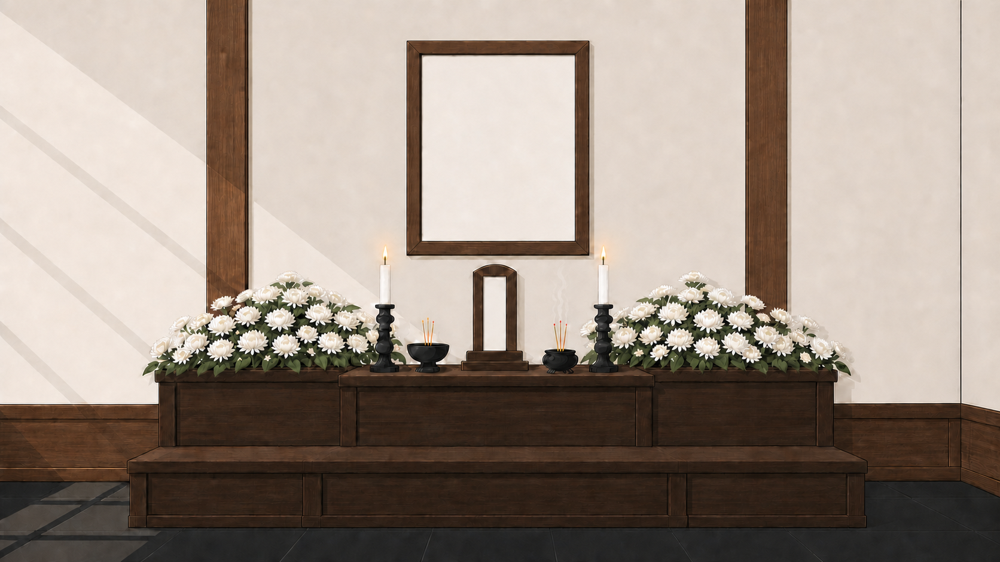

초대장
초대 링크를 열면 고인의 빈소와 유족의 인사말을 먼저 만납니다.
멀리 있어도 함께하는 추모 경험
유록은 무빈소 장례를 치르는 가족과 조문객을 위한 온라인 빈소입니다.
장례의 마음과 절차를 온라인에 옮기고, 이후에는 고인의 기억을 오래 보관합니다.

헌화할수록 국화가 차곡차곡 쌓이는링크 하나로 입장부터 추념까지
초대 링크를 열면 고인의 빈소와 유족의 인사말을 먼저 만납니다.
이름·고인과의 관계·전화번호를 남기고 조의 계좌를 확인합니다.
헌화 버튼을 누르면 한 송이 국화가 제단 위에 선명하게 피어납니다.
한지 공간에 글과 사진을 남기면 고인을 기억하는 장면이 만들어집니다.
기능보다 마음이 먼저 보이도록
조문객이 헌화할 때마다 서로 다른 각도의 국화가 자연스럽게 쌓입니다.
전화번호 하나당 추념 1건과 사진 최대 3장을 남길 수 있습니다.
대표 사진을 중심으로 글과 사진을 자동 배치해 추념 공간을 만듭니다.
한국식 제단과 한지의 질감으로 가볍지 않은 애도 경험을 유지합니다.
서비스 생애주기
온라인 빈소와 제단을 공개하고 방명록·헌화·추념 작성을 받습니다.
영정과 제단 화면은 닫히고, 고인의 추념 공간만 보관됩니다.
방명록의 전화번호는 자동 삭제하고 남겨진 기억은 그대로 유지합니다.
추념 공간은 외부에 노출하지 않고 유족을 위해 비공개 보관합니다.
글쓰기 인원 × 보관 기간
※ 방문 인원이 아닌 방명록·추념 글쓰기 인원을 기준으로 하며, 유족 관리자 권한은 제한 없이 이용합니다.
가족과 장례식장을 연결
검색으로 유록을 찾고 로그인 후 온라인 빈소를 신청합니다.
장례지도사가 유족에게 안내하고 필요한 경우 페이지 개설을 대신합니다.